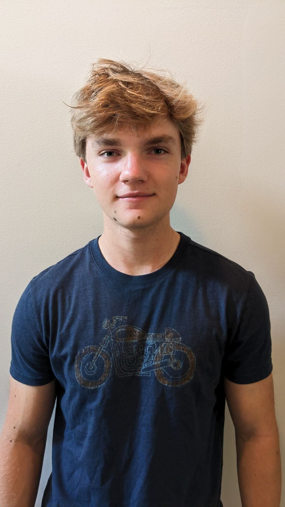
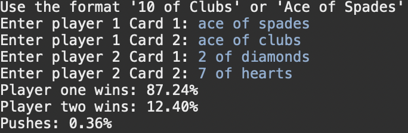
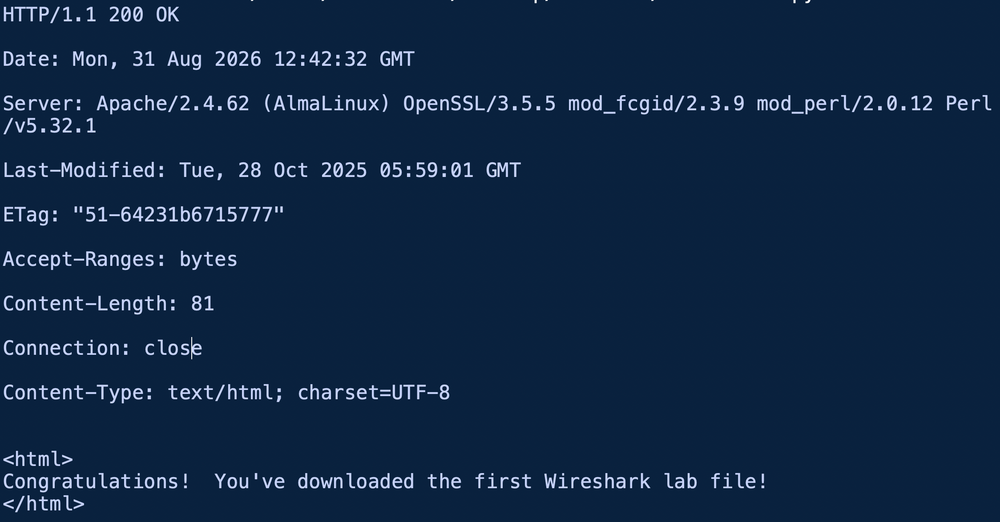
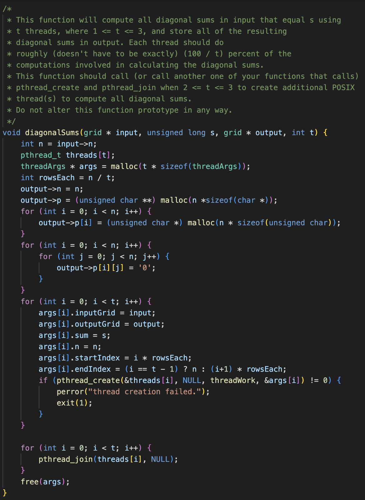

Dean Tindol
Contact Dean Tindol
Dean Tindol

1280 E Broad St, Athens, GA, 30601 • (912) 509-0903 • rdt25097@uga.edu
Computer Science Student and aspiring software engineer with a passion for building efficient solutions. Seeking internship opportunities to apply technical skills and contribute to innovative projects.
Education
University of Georgia
3.7 GPA
Bachelor of Science
May 2027
Honors and Awards
Presidential Scholar
Spring 2026
Skills
HTML
Java
JavaScript
C
C++
Python
Projects
Poker Odds Calculator

Command-line tool in Java to calculate pot odds for two-player Texas Hold'em scenarios
Simple HTTP Web Server

Built in Python
Used sockets
Multithreaded Matrix Scanner

Uses pthreads in C to scan a matrix for a given value
Engineered a custom algorithm that divides grid processing evenly across N threads